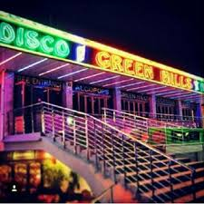
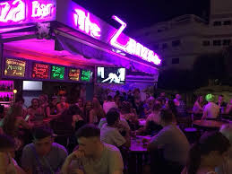
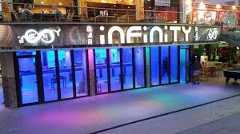
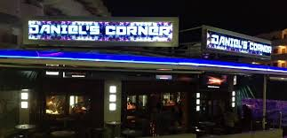

Greenhills
- Green Hills Located in the Heart of Santa Ponsa,.It is the biggest Club they have and most people go there so it is always busy.

Zanza Bar
- The Zanza Bar, Santa Ponsa which is the purple bar on the roundabout. have a drink and relax. they have extremely friendly staff, all live sports and events on all TV screens as well as multiple offers on drinks and tasty cocktails. they are famous for having only the most delicious Strawberry Daiquiri on the island!

Infinity Bar
- Great bar, great staff and very attentive, fantastic views across the dunes and perfect for sunset, topped off with a cocktail!
Definitely worth a visit for food and drink, different entertainment at night from live band to DJ.

Daniel's Corner
- Simply "The Best in Santa Ponsa". they have huge drink towers for really cheap and come out with a free bottle of vodka.